Toscana
| Termelés | |
|---|---|
| Morál | |
| Védelmi bónusz | |
| Foglalható/Fosztható | |
| Szabotálható |
- Ökoszféra
- Gazdaság
- Kereskedelem
- Szállítás
- Háború
- Ügynökök
| név | aktív (üzemel) |
inaktív | |
|---|---|---|---|
| Települések | |||
 | Falu | ||
 | Város | ||
| Élelmiszeripar | |||
 | Húsüzem | ||
| 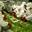 | Vegagyár | ||
 | Kenyérgyár | ||
 | Szeszfőzde | ||
| Energia | |||
 | Naperőmű | ||
 | SPS | ||
| 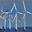 | Szélfarm | ||
| 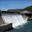 | Vízi erőmű | ||
| Hullámfarm | |||
| 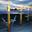 | Árapályerőmű | ||
| 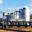 | Ozmózis erőmű | ||
 | Geotermikus erőmű | ||
| HDR erőmű | |||
 | Bioetanol erőmű | ||
| Atomerőmű | |||
 | Fúziós reaktor | ||
| Kitermelés | |||
 | Fűrészmalom | ||
| 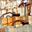 | Kőbánya | ||
| 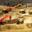 | Homokbánya | ||
 | Titánmű | ||
 | Urándúsító | ||
| Feldolgozás | |||
 | Üveggyár | ||
 | Félvezetőgyár | ||
 | Szénégető | ||
 | Olajgyár | ||
 | Műanyaggyár | ||
| Hadi ipar | |||
 | Űrhajógyár (alap) | ||
| Űrhajógyár (fejlett) | ||
 Cirkáló Cirkáló | 1 | 1 | |
| Speckók | |||
 | Kutatóintézet | ||
 | Hírszerző központ | ||
 | Űrkikötő | ||
 | Teleport | ||
Épülőfélben lévő gyárak
Dózerfélben lévő gyárak
Építési lista
Speciális erőforrások
| név | készlet | delta/igény | jövő/szabad | |
|---|---|---|---|---|
 | Lakóhely | |||
| Népesség | |||
| Munkaerő | |||
| Képzett munkaerő |
Erőforrások
| név | készlet | term/fogy/száll | nettó | |
|---|---|---|---|---|
| Élelmiszer | ||||
 | Energia | |||
| Fa | ||||
 | Kő | |||
| Homok | ||||
| Titán | ||||
| 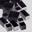 | Dúsított urán | |||
 | Szén | |||
 | Olaj | |||
 | Műanyag | |||
 | Üveg | |||
| Félvezető | ||||
 | Alkohol |
Nyers erőforrások
| név | készlet | felt/fogy | nettó | |
|---|---|---|---|---|
| 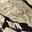 | Nyers kő | |||
| 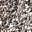 | Nyers homok | |||
 | Titánérc | |||
| 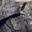 | Uránérc |
Beépítettség
| Beépített | ||
|---|---|---|
| Effektív | ||
| Szabad | ||
| Épületek lábnyoma |
Vagyonod:
Teleportjaid:
Napi vételi limit resetelése:
- R01
- R02
- R03
- R04
- R05
- Szabadpiac